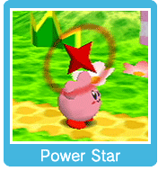

You can copy the abilities of certain enemies by pressing to inhale them and then down on to swallow them. (The enemies must have a Special Power for Kirby to gain a Copy Ability.) You can also mix two Special Powers together to create a Power Combo.
Using Copy Abilities
Press to use Kirby's current Copy Ability.
Power Combos
There are three ways to create a Power Combo. Simultaneously inhale two enemies with Special Powers. Inhale an enemy with a Special Power, exhale it onto another enemy with a Special Power, then inhale the Power Combo Star that appears. Throwing an enemy Kirby is holding at another enemy has the same effect as exhaling one. Throw a Power Star at an enemy with a Special Power, then inhale the Power Combo Star that appears.

Power Stars
These stars are the source of the Special Powers that some enemies have. If you take damage after copying a power, your Copy Ability will sometimes float away in the form of a Power Star. If you manage to inhale the Power Star, you will regain the Copy Ability. However, if you throw a Power Star and it doesn't hit an enemy with a Special Power, you will not be able to recover it. A Power Combo Star cannot be recovered when thrown.


 to inhale them and then down on
to inhale them and then down on  to swallow them. (The enemies must have a Special Power for Kirby to gain a Copy Ability.) You can also mix two Special Powers together to create a Power Combo.
to swallow them. (The enemies must have a Special Power for Kirby to gain a Copy Ability.) You can also mix two Special Powers together to create a Power Combo.
 Using Copy Abilities
Using Copy Abilities